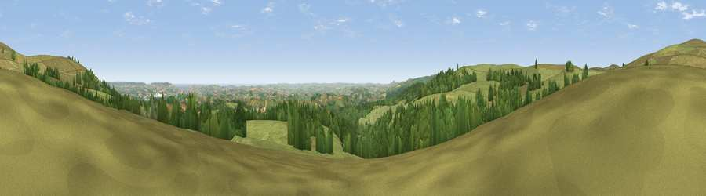

Viewpoint near Buckland in the Moor
#3983 in England · top 7% of its area beats it · near Buckland in the MoorThe view, rendered

A 360° render of this exact spot computed from the terrain model, tree cover and land cover — summer colours, afternoon light, calibrated against photographs of famous viewpoints. Real trees, hedges and buildings will differ in detail.
The panorama
Grey silhouette: terrain skyline in each direction (720 bearings, Earth curvature and refraction included). Dashed green: skyline with trees (+15 m) and buildings (+8 m) as obstacles. Blue strip: how far the ground is visible on each bearing.
Where the view opens
Wedge length = distance to the farthest visible ground on that bearing (vegetation-aware). Rings at 10, 25 and 50 km.
What fills the view
67% grassland · 25% woodland · 6% cropland ·
Angular shares of the visible panorama (visual magnitude), not map area. Landscape diversity 0.38 (0–1 Shannon).
Key numbers
More beautiful places nearby
The staircase of upgrades: each row has a higher view potential than everything closer. Driving times are estimates from straight-line distance, calibrated against real road routing — check an actual route before setting out.
| Place | Direction | Drive | Score |
|---|---|---|---|
| Viewpoint near Haytor Vale | NE · 1 km | ~4 min | 79.1 |
| Viewpoint near Buckland in the Moor | WSW · 2 km | ~4 min | 80.7 |
| Beacon Hill | SE · 16 km | ~28 min | 82.3 |
| Viewpoint near Stokeinteignhead | E · 18 km | ~31 min | 84.1 |
| Viewpoint near Hope | S · 36 km | ~54 min | 84.4 |
| High Peak | ENE · 37 km | ~56 min | 85.3 |
| Pencarrow Head | WSW · 64 km | ~86 min | 86.0 |
| Viewpoint near Lesnewth | WNW · 65 km | ~88 min | 87.7 |
50.54976, -3.76644 · source: screening · position refined by local search. Computed location — check access rights before visiting.